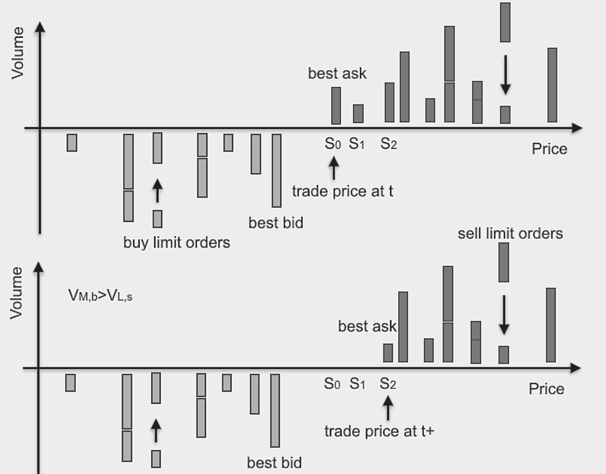
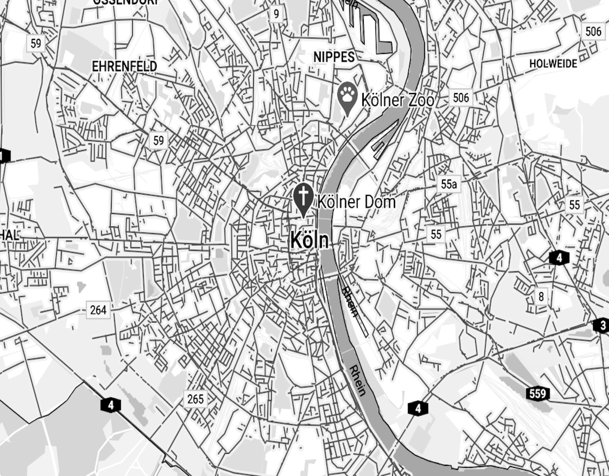
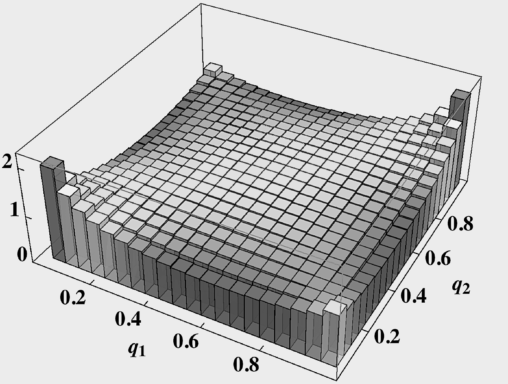
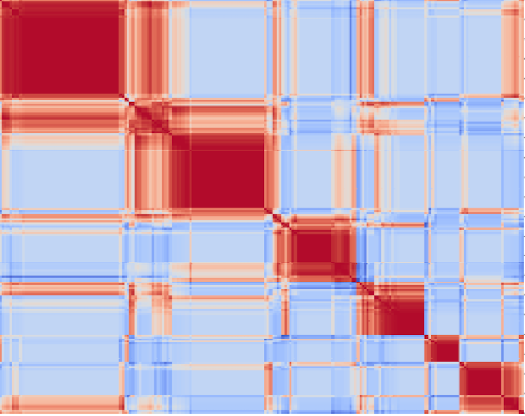
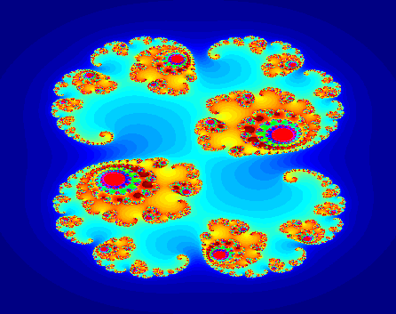
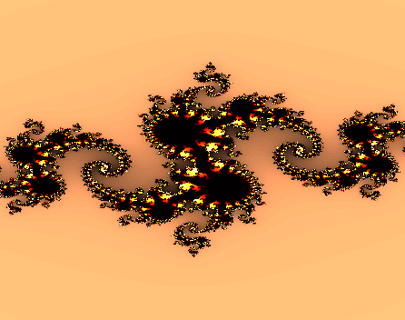
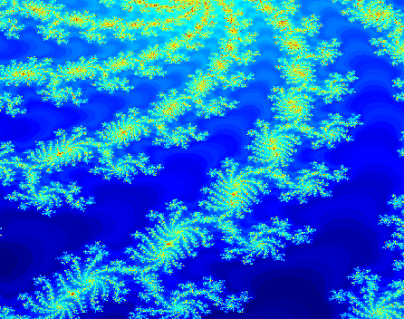
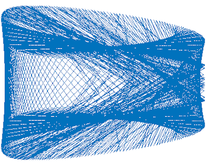

Shanshan Wang, Dr. rer. nat
University of Duisburg-Essen, Germany
Email:
Language: Chinese (native), English
Econophysics, Market Microstructure, Price Impact, Complex Systems, Traffic Networks, Data Science, Machine Learning
Shanshan Wang, Michael Schreckenberg, Thomas Guhr
preprint: arXiv:2202.07644
Sebastian Gartzke, Shanshan Wang, Thomas Guhr, Michael Schreckenberg
preprint: arXiv:2109.04268
Shanshan Wang, Sebastian Gartzke, Michael Schreckenberg, Thomas Guhr
J. Stat. Mech. 2021, 123401 (2021), preprint: arXiv:2107.12947
Shanshan Wang, Sebastian Gartzke, Michael Schreckenberg, Thomas Guhr
J. Stat. Mech. 2020, 103404 (2020), preprint: arXiv:2008.05530
Shanshan Wang, Sebastian Neusüß, Thomas Guhr
Eur. Phys. J. B 91, 266 (2018), preprint: arXiv:1710.07959
Shanshan Wang, Sebastian Neusüß, Thomas Guhr
Eur. Phys. J. B 91, 191 (2018) , preprint: arXiv:1711.07630
Shanshan Wang, Thomas Guhr
J. Stat. Mech. Theory Exp. 2018, 033407 (2018) , preprint: arXiv:1706.09240
Shanshan Wang, Thomas Guhr
Market Microstructure and Liquidity 03, 1850009 (2017) , preprint: arXiv:1609.04890
Shanshan Wang
preprint: arXiv:1701.03098 (2017)
Shanshan Wang, Rudi Schäfer, Thomas Guhr
Eur. Phys. J. B 89, 207 (2016) , preprint: arXiv:1603.01586
Shanshan Wang, Rudi Schäfer, Thomas Guhr
Eur. Phys. J. B 89, 10 (2016) , preprint: arXiv:1603.01580
Shanshan Wang, Rudi Schäfer, Thomas Guhr
preprint: arXiv:1510.03205 (2015)
Shan-Shan Wang, Guo-Qiao Zha
Int. J. Mod. Phys. B 29, 1550009 (2015)
Guo-Qiao Zha, Shan-Shan Wang, Jing-Chao Wang, Shi-Ping Zhou
J. Appl. Phys. 112, 033907 (2012)
Virtual DPG Spring Meeting (Annual Conference of the German Physical Society) BP-CPP-DY-SOE, Germany
Talk, March 23, 2021 [Link].
DPG Spring Meeting (Annual Conference of the German Physical Society), Dresden, Germany
Talk, March 20, 2017 [Link].
DPG Spring Meeting (Annual Conference of the German Physical Society), Regensburg, Germany
Poster, March 7, 2016 [Link].

Presentation

Presentation

Presentation

Presentation, ref. this webpage

Figure: Fractal art.

Figure: Dragon.

Figure: Wave plane.
Figure: Grid pattern.

Figure: Bird's nest.